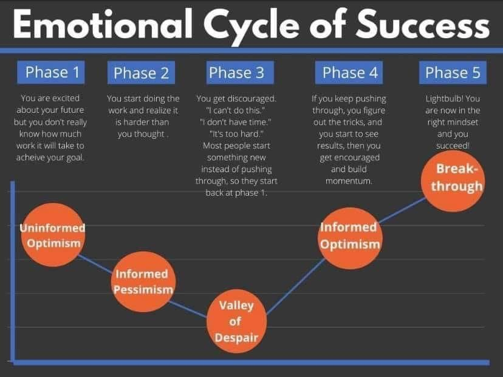
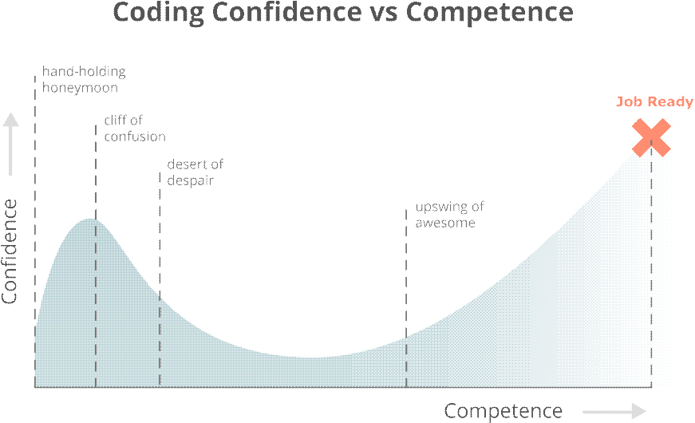

<!DOCTYPE html>
<html lang="en">

<head>
    <meta charset="UTF-8">
    <meta name="viewport" content="width=device-width, initial-scale=1.0">
    <link rel="stylesheet" href="css/normalize.css">
    <link rel="stylesheet" href="css/style.css">
    <link rel="stylesheet" href="css/queries.css">
    <link rel="preconnect" href="https://fonts.gstatic.com">
    <link rel="preconnect" href="https://fonts.gstatic.com">
    <link href="https://fonts.googleapis.com/css2?family=Noto+Sans+TC:wght@300;400;500;700;900&display=swap"
        rel="stylesheet">
    <title>魏伊廷的申請問題回應</title>
</head>

<body>
    <header>
        <h1>魏伊廷</h1>
        <span>軟體工程師扶持計劃申請問答</span>
    </header>
    <main>
        <section>
            <h2>兩百字內的個人簡介</h2>

            <p>我是一個兼具理工與設計思維的人，熱衷於問題拆解與邏輯思考，也醉心於設計的精準與美好。畢業於台大土木工程系，曾赴美學習建築設計，喜歡「創造」帶來的滿足感，也推崇自由多元的社會型態。為了找到理想的工作及生活，在本科以外做過各種嘗試，其中因
                <a href="https://drive.google.com/file/d/1MEob2iFViNKnSRBObqDjR43_Ho4ynurV/view?usp=sharing"
                    target="_blank">UI 改善提案</a> 、 <a href="https://issuu.com/weiyiting/docs/____" target="_blank">空間裝置整合
                    AR
                    互動設計競圖</a> ... 等經驗踏入了軟體開發領域。兩個月前，我開始全職投入學習網站工程師所需技能，決心要成為一位懂設計、懂後端的前端工程師。</p>
        </section>
        <div class="sep"></div>

        <section>
            <h2>為什麼想成為工程師？</h2>
            <h3 class="big">追尋理想，實現我對未來的想像</h3>
            <p class="bigger">
                在做建築設計時，我便對於科技如何介入空間以創造更高的互動性很有興趣，我也曾做過整合空間與軟體來創造新的使用者體驗的設計概念提案。而對於初踏入軟體開發領域的我來說，<span>我希望自己有一天能靠著自己的能力，與團隊一同開發、實現出我對未來軟體介入空間體驗的想像。</span>雖然實現它們距離現在的我非常遙遠，甚至有些可能不在網站工程師的範疇內，但我想以網站前端工程師的身份踏入軟體開發產業，帶著這份自我期許與能量一路努力下去，希望未來的我可以<span>寫出富互動性，對社會公共與多元性有價值、有意義的軟體或網站。</span>
            </p>
            <p class="bigger">而除了這個理想以外，以下是其他讓我想成為前端工程師的原因：</p>
            <h3>用程式碼「創造」出產品的過程</h3>
            <p>我喜歡設計的精準與美好，更熱衷於透過自己的努力，用一行一行的程式碼讓設計被執行出來的過程。身為前端工程師，與設計師協調合作，一點一滴創造、打磨、改善一個產品的使用介面與互動體驗，再配合後端工程師完成一個產品的全貌，這整個過程能帶給我的成就感與滿足感，想必是難以言喻的。
            </p>
            <h3>「生活品質」的提升</h3>
            <p>我曾以為只要做喜歡的工作就能擁有快樂的生活，但近來意識到我所在的建築設計業高工時低報酬的工作型態，無法讓我擁有期待的生活品質。轉職初期必然辛苦，但長遠看來成為一位前端工程師，工時與相對應的報酬能夠讓我擁有更理想的的生活品質。
            </p>
            <h3>能透過「努力」擁有更強的「實力」</h3>
            <p>並不是所有產業都能單純透過努力學習來持續增強專業能力，軟體工程師的職業特性與生態圈豐富的資源，讓願意付出時間努力的人就能增強實力，加倍的努力 =
                更多的成長，我喜歡這樣「努力與實力、價值等價對應」的產業環境。我想要靠著自己持續的努力投入，不斷的突破，成為一位真正能夠解決各種問題、創造更多有價值的產品的工程師。
            </p>
        </section>
        <div class="sep"></div>

        <section>
            <h2>為了成為工程師，曾經做過什麼努力？</h2>
            <h3>修研究所實體課程，獨立實作小型專案</h3>
            <p>最初入門時，我曾修了一門交大研究所開設，整合網頁設計與基礎前端的「多媒體網頁設計實務」實體課。這門課需要獨立完成兩個自行提案設計的小型專案，我為了最後的成果符合自己的設計構想，搜尋 Stack
                Overflow、 YouTube tutorial、 CodePen 等資源來解決問題，細節上用 developer tool
                檢視逐步修正，測試不同裝置的呈現效果，獨自開發出一個印度旅行紀實網站與 <a href="https://wei-yiting.github.io/WYT-design-portfolio/"
                    target="_blank">自己的設計作品集展示網站</a> 。</p>
            <h3>建立與工程師生態圈的連結</h3>
            <p>我開始持續搜集各種資訊與資源，除了google 與論壇上的資訊，我也加入社群、參加線上讀書會、 workshop、訂閱 YouTube 頻道、電子報 ...
                等等，用一些零碎的時間持續關注吸收這些資訊，也與成功轉職工程師的朋友交流，讓自己與工程師的生態圈的產生較緊密的連結。</p>
            <h3>依據市場職缺能力要求，訂定轉職自學計畫課表，開始全職學習</h3>
            <p>作為以求職為導向的學習，我直接從目前就業市場上，眾多前端工程師職缺的能力要求中，歸納出所需技能清單，再依據清單搜尋
                Udemy、YouTube...等等線上教學資源，進一步訂定我的 <a
                    href="https://docs.google.com/spreadsheets/d/1mMYGUsI6uoD0feEpYK0sYlW9XhEXxEW4AObs1ZFpEc0/edit?usp=sharing"
                    target="_blank">自學計畫課表</a> ，開始我的全職學習歷程。截至目前我看了 CS50，學習 command line、 git / GitHub 基本操作、html、
                CSS、flexbox、Bootstrap、JavaScript 基礎...等，也透過閱讀工具書讓觀念更完整有系統，實作 <a
                    href="https://github.com/wei-yiting?tab=repositories" target="_blank">微型專案</a> 來重複練習自己所學。</p>
            <h3>接簡單的外包案累積工作經驗</h3>
            <p>為了盡快讓自己有實戰經驗，一個月前我以當時有限的能力整理出一些網頁作品，主動爭取到一個按件計酬、長期配合的切版工作。雖然這與我理想的前端工程師工作範疇有很大的差距，但我希望透過逐步累積一些小的工作經驗，在未來應徵工作時說服公司我有與其他工程師、設計師溝通合作的能力，藉此增加自己的競爭力。
            </p>
            <h3>慎重準備此軟體工程師扶持計劃的申請</h3>
            <p class="bigger">
                最後，我很努力的準備這個軟體工程師扶持計畫的申請，花了很多心思釐清、整理，嘗試清楚表達自己的經歷與想法，希望這些努力能獲得這個寶貴紮實的半年訓練營的門票，讓自己成為一個合格的前端工程師。</p>
        </section>
        <div class="sep"></div>

        <section>
            <h2>對於工程師的職業想像是什麼？</h2>
            <p>由於我的近期目標是成為前端工程師，因此以下寫的是我對前端工程師的職業想像：</p>
            <h3>很多的溝通與團隊合作</h3>
            <p>我想像前端工程師是個很多溝通與團隊合作的工作。需要能與 PM 溝通整體專案的開發複雜度，來回討論各需求的最佳可行方案與預期開發所需時間，以滿足專案需求。也需要能理解 UI/UX
                設計，並與設計師溝通技術上較難以達成的設計有哪些替代方案，能在介面視覺與使用者經驗可以達到相似效果。還需要與後端工程師討論前後端的工作該如何劃分與串接，共同合作達成專案需求，完成網站開發工作。</p>
            <h3>終日與程式碼為伍，將設計稿化成現實、優化效能</h3>
            <p>很多時間都埋首於程式碼中，透過讀懂並修改他人的程式碼和撰寫新的程式碼 ，來開發新網站、做既有產品的介面與功能的增減修改、或是優化網站效能，運用 HTML、CSS 與 JavaScript
                把設計化成在瀏覽器上呈現的畫面與互動效果。這當中會需要非常耐心的來回測試修正，確保網站在各種裝置、瀏覽器中都能最大化的還原設計稿，有最佳的使用體驗。另外，也會有蠻多時間在 debug
                ，需要很有耐心與毅力面對大量的程式碼分析除錯。</p>
            <h3>工作自由、步調快速，著重實力與成果</h3>
            <p>上班與休息時間通常有些彈性自由，隨著專案的進度工作量會有蠻大的波動，有時需要加班。著重成果產出的效率，可能每天都會有很簡短的會議說明昨天做了什麼、今天打算要做什麼，每週一、五也可能會有進度規劃與檢討來確保進度。會階段性評估去檢討個人對公司及產品帶來的影響與效益、實力能否幫助他人...
                等等。</p>
            <h3>技術變化快速，需要不斷精進自我</h3>
            <p>由於軟體產業的技術發展更迭快速，因此身為工程師必須對世界保持好奇，把變化當成常態，不斷學習新的知識與技能。掌握新的發展趨勢，看技術文件、實作新技術、參加討論活動、出席 conference、做
                side
                project ... 等等，不論是什麼階段，都要努力去嘗試、探索、超越自己，精進自身的實力，才能持續在這個產業保持競爭力。</p>
            <p id="last">
                最後，雖然前端工程師的職缺很多，但是當中雷的缺也很多。因為非本科的背景加上缺乏經驗，我預期在轉職後的第一份工作，很可能是較不理想的環境，因此相較於上述的職業想像，這時的工作內容可能較為雜亂，沒有設計師跟 PM
                而需要一個人負責所有的需求，前人留下來的 code 也比較難讀懂或修改… 等等。但累積了一定的工作經驗並持續自學成長後，我相信我就能夠轉到與上述職業想像相近，比較健全完善的工作環境。</p>
        </section>
        <div class="sep"></div>

        <section>
            <h2>如果參與這個計畫，會怎麼安排學習時間？</h2>
            <h3>視進度為生活中最主要優先的項目</h3>
            <p>每週老師給定的進度，會是我參與計畫期間生活中最重要的第一優先，無論如何都必須排除萬難在時限內完成。我計劃<span>平日每天花 8 – 12
                    小時</span>持續不斷的學習、實作，<span>週末則彈性安排兩天共計 6 – 16
                    小時</span>學習，其餘時間有適度的運動與休閒，以期在這半年期間能夠維持在良好的狀態，持續專注、有效率的學習，讓自己在這個計劃中有最大的收穫。</p>
            <h3>每週學習時間安排細節</h3>
            <p>一週作為一個循環，我會以<span>「每週五午夜前完成當周進度要求」作為目標</span>，配合前述的學習時數來分配每日進度。在週一早上的會議理解當週學習重點與實作進度要求後，下午開始看線上課程，最遲在週二晚上要搭配課程開始實作。<span>平日每天我都會要求自己做進度報告</span>來確認自己有具體的進展。週末我則預留為當週進度未能如期完成可以運用的緩衝時間，而若進度順利完成，則利用週末做當週學習主題的複習、筆記整理、或是進行其他補充學習。
            </p>
            <h3>第二、三階段參與實體活動的時間安排</h3>
            <p>在第二、第三階段我會參加每週五的實體活動。這兩階段除了前項的時間安排以外，我會努力在<span>每週四完成當週大部分的開發進度，整理出自己難以突破的問題點</span>，在禮拜五整天和大家一起進行程式開發過程中，就尚未融會貫通的概念、以及較複雜的問題與導師和同伴請教、討論，讓自己透過實體活動徹底釐清、掌握當週學習重點，再用當周剩餘時間完成該周開發進度。
            </p>
        </section>
        <div class="sep"></div>

        <section>
            <h2>如果參與這個計畫，預期會碰到什麼困難？你打算怎麼解決它？</h2>
            <p>我預期會碰到的困難有兩種，分別是心態上的與知識技術上的，以下就這兩種分別敘述。</p>
            <h3 class="big">- 心態調適上的困難</h3>
            <h3>與挫折的情緒共處並持續前進，透過跟大家的互動帶來更多能量</h3>
            <p>這個計畫會給予繁重的作業和專案要求，因此我預期每週都可能經歷一次下圖中的情緒循環，而我認為度過第二、三階段的悲觀與絕望的方法，就是「知道」自己正在經歷這個過程，感受到這些負面情緒，與他們共處，但是不停下腳步，持續努力推進直到突破。另外，我與此計劃中其他人的連結也很重要，當不間斷的挫折讓我開始感到疲乏、撐不下去時，
                我與同伴、助教、導師之間的討論，彼此相互扶持的感覺，我相信能帶給我更多繼續努力的能量。</p>
            <div class="wrapper">
                
            </div>
            <h3>用一句話、一張圖還有過去的努力的痕跡，來面對強烈的自我懷疑與不安</h3>
            <p>在問題無法解決、或是花費大量心力才做出一個不起眼的小東西時，我預期會出現強烈的自我懷疑，我會在這時候對自己說彭彭老師在說明會中說的一句話：</p>
            <p><span><i>“一步一步靠著自己做專案，會不停的走在低谷裡，但是持續堅持，逐步突破，最終會慢慢的開始有感覺，我是有能力可以自己完成開發的。”</i></span></p>
            <p>也同時想著下面這張圖，告訴自己我正在這張圖的某一個點上，每一分的努力掙扎都是正在成長的自己。而如果這樣的自我懷疑開始演變成劇烈的不安，擔心自己無法滿足求職基本需求時，我會回頭去看之前的進度報告與產出成果，讓自己聚焦在一路以來的努力與成長，然後告訴待業中的自己，無論如何必須繼續走下去，絕不能在突破臨界點前敗下陣來，終有一天我會從
                0 走到 1，找到工作成功轉職。</p>
            <div class="wrapper">
                
            </div>
            <h3 class="big">- 知識與技能方面的問題</h3>
            <p class="bigger">為培養獨立解決問題的能力與效率，遇到問題時，我會要求自己在 <span>36 小時內嘗試所有可能自行解決的方法</span>，仍然卡關才會上 slack
                向同學與導師的發問，再依著 slack 上獲得的資訊繼續解決問題，<span>同一問題應該在三天內解決</span>。</p>
            <p class="bigger">以下列出我認為會遇到的問題以及可以幫助自己解決的方法：</p>
            <h3>難以理解線上課程某個主題的整體架構或概念</h3>
            <ul>
                <li>將線上課程提到的概念做成筆記，藉由圖形化內容來幫助自己理解。</li>
                <li>從筆記中找到卡住的關鍵點， google 相關內容，或透過其他教學影片、書籍中不同的講解方式去理解。</li>
                <li>將具體問題點在實體活動中與導師同學討論。</li>
            </ul>
            <h3>遇到一個複雜的開發進度要求，不知道該從何下手實作 </h3>
            <ul>
                <li>將開發需求視覺化，用魚骨圖或樹枝圖分析，將之拆解成多個知道如何下手實作的小問題。</li>
                <li>把問題畫成程式化處理過程的流程圖或架構，先寫 pseudo code，再轉成對應的程式語言，逐步寫出 code。</li>
            </ul>
            <h3>程式有錯跑不出來或跑出來非預期中結果</h3>
            <ul>
                <li>仔細閱讀顯示錯誤訊息內容。</li>
                <li>學習更善用 developer tool 檢視並重複測試。</li>
                <li>分段測試程式碼、印出階段性預期結果，從不符合預期之處找到錯誤所在的環節。</li>
                <li>google 找出問題原因和可能修正方式，逐一嘗試。</li>
            </ul>
            <h3>不知道如何寫出乾淨易懂的程式碼</h3>
            <ul>
                <li>與其他同伴交流或請導師釋出前一週進度的程式碼，搜尋 GitHub 上主題相近的專案，從中檢討比對學習。</li>
                <li>每次看到更好的寫法時都記錄下來，累積成自己的筆記，開發前先複習，嘗試運用在自己的實作。</li>
            </ul>
        </section>
        <div class="sep"></div>

        <section>
            <h2>想要對我們說的事情？</h2>
            <h3>這個軟體工程師扶持計畫，能讓我突破目前自學的瓶頸</h3>
            <p>雖然我替自己安排了一套循序漸進的轉職自學計畫，但是在經歷了兩個月全職自學後，我逐漸感覺到這個方式當中有許多不足，而就在這時看到了這個軟體工程師扶持計畫，<span>我認為這個訓練營正是目前的我需要的，它能補足我自學中缺少的部分，讓我突破目前學習的困境，成功轉職</span>。
            </p>
            <p><span>利用線上資源自學的狀態，在面對無法解決的問題時，我沒有導師從旁提供關鍵引導，也難有一起努力的同伴可以相互交流、討論、砥礪，</span>所以當我在線上課程安排的實作練習中遇到無法解決的問題時，我幾乎只能依賴
                project code along
                教學影片，但是這等於是老師跳下來一步一步帶著我寫程式碼，<span>並不能讓我真正累積「獨立開發」的經驗。</span>而在這樣的情況下，要開發出屬於自己的完整專案作為作品集爭取工作，更是困難重重。另外，近期我也開始體認到，透過線上課程自學只能讓我了解開發的邏輯架構與程式語法，卻<span>難有足夠的實作機會</span>。然而要成為一個合格的工程師，勢必需要透過不斷的實作才能紮實累積開發經驗，培養獨立完成專案與解決問題的能力。正因爲此，<span>我非常認同軟體工程師扶持計畫這樣一個「由老師規劃給定進度，自己不斷的實作、練習解決問題、獨立完成開發進度，再由老師檢核成果」的訓練方式。</span>我相信它比我目前的自學方式有效許多，也更能夠真正訓練出一位工程師。
            </p>
            <h3 class="big final">我，準備好了！</h3>
            <p class="bigger">
                我深知接下來半年會非常辛苦，卻更加期待訓練期間全心投入的自己，期待藉由參加這個訓練營，在一個嚴格、高強度、有導師引導、有同伴一起努力的環境裡，接受密集紮實的網站開發實作訓練，持續突破種種困難與考驗，讓自己能夠成為一個真正合格的前端工程師，在追尋理想的路上向前跨出一大步。
            </p>
        </section>
    </main>
    <footer>
        <span>This page is created by Yi-Ting Wei through GitHub Pages, 2021 </span>
    </footer>
</body>

</html>